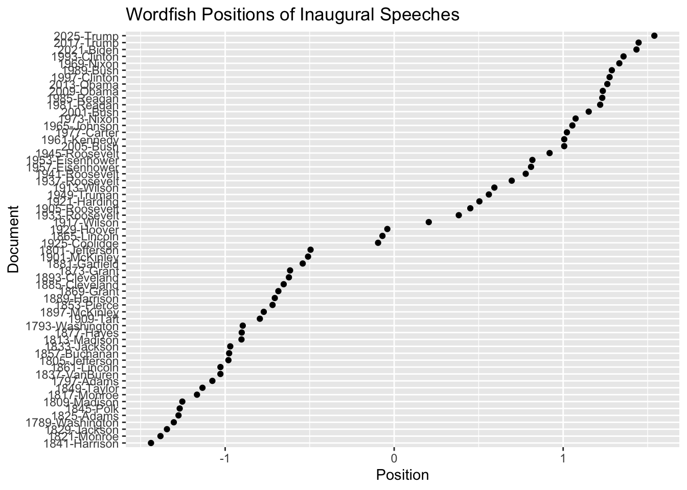
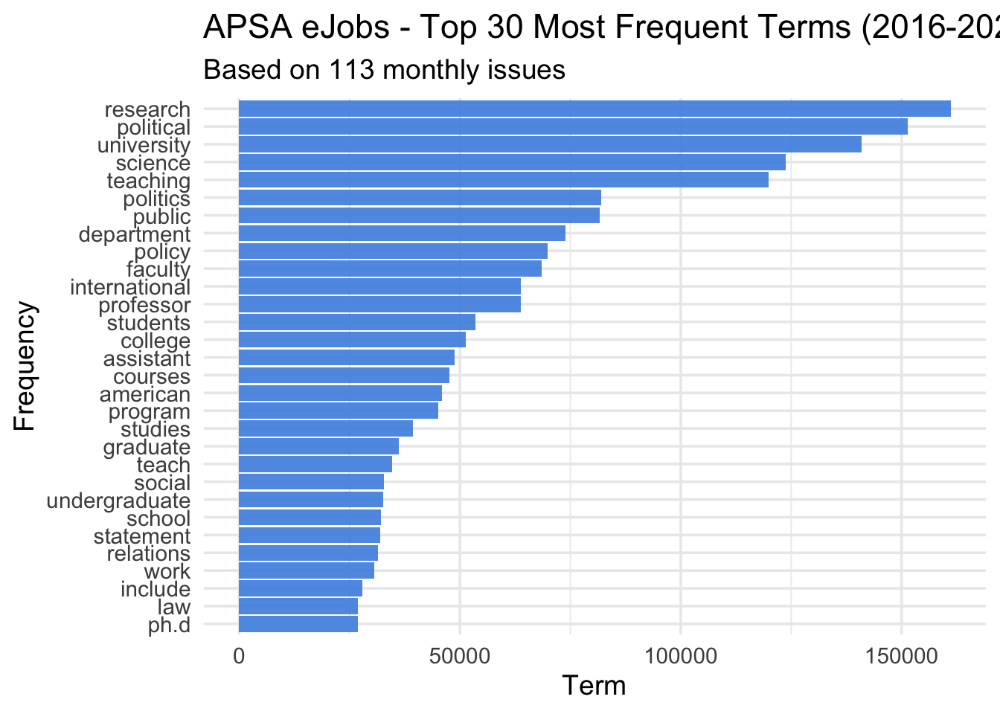
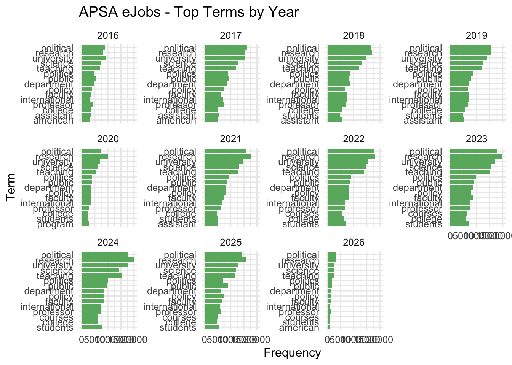
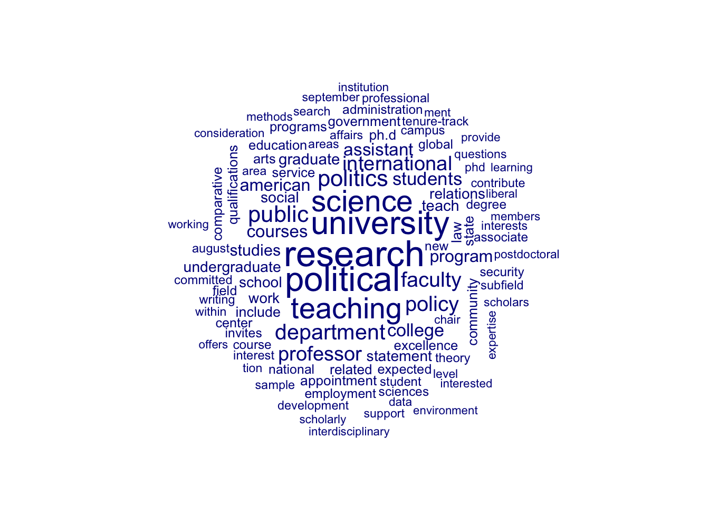
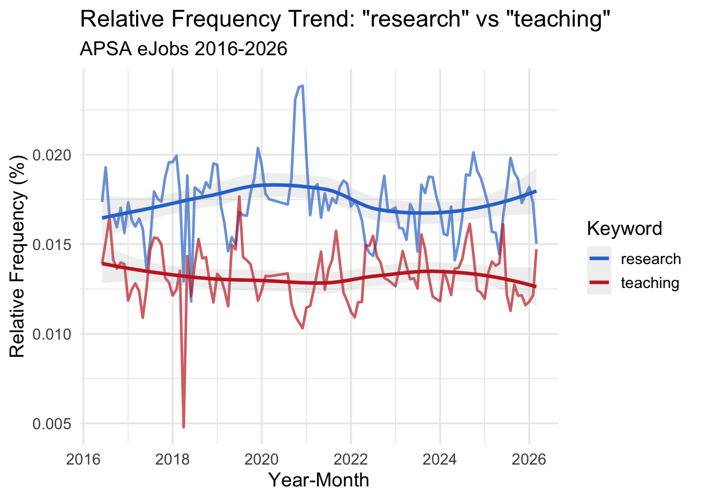
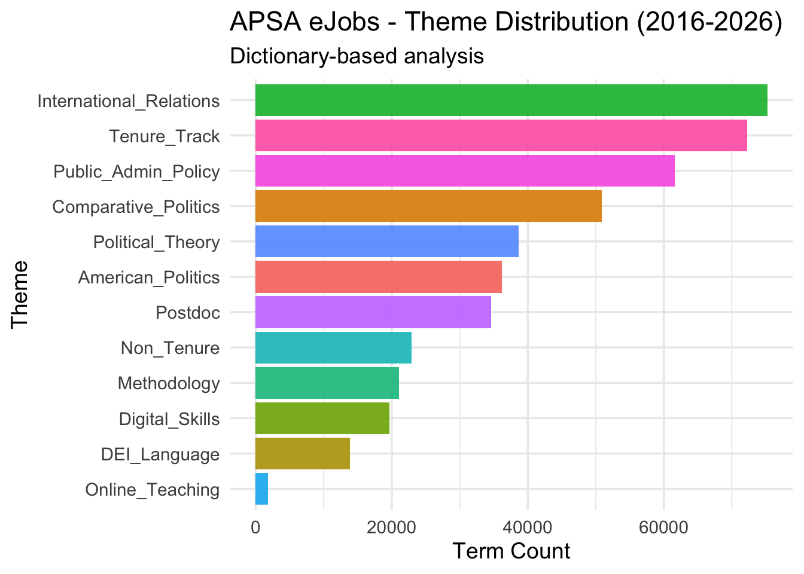
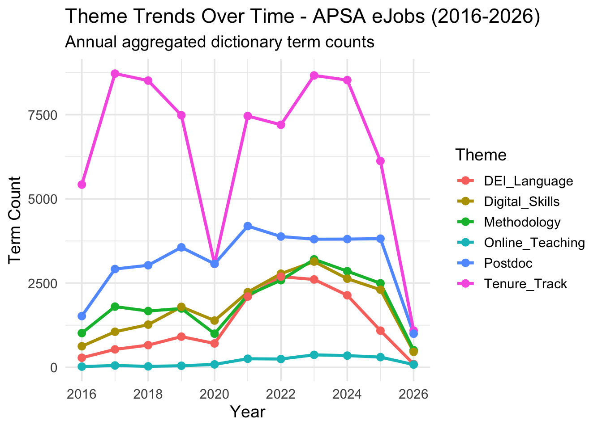
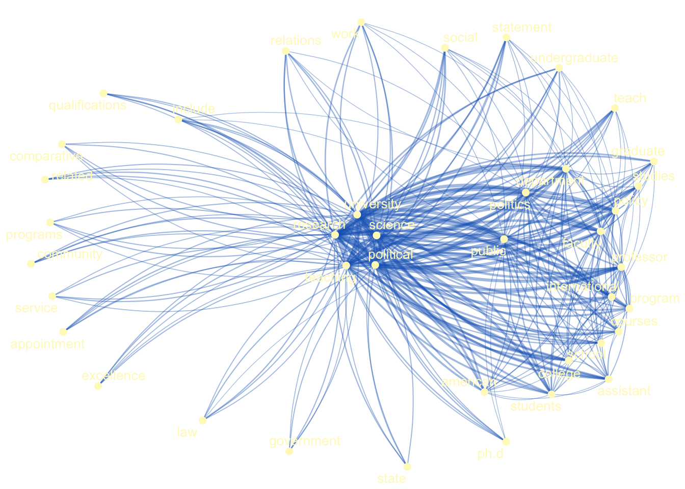
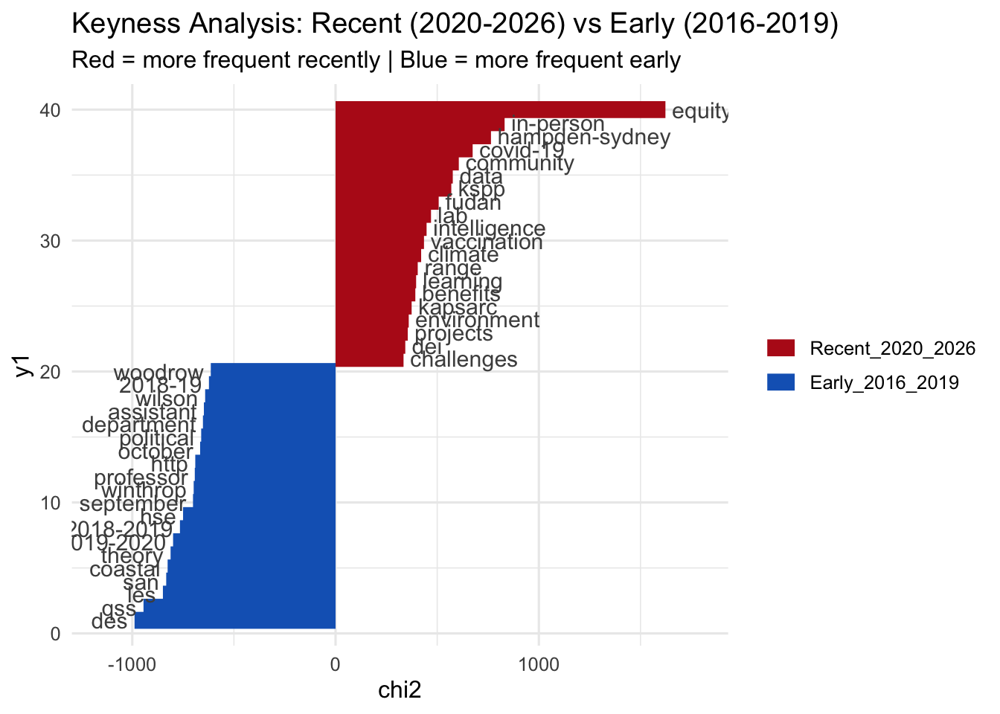

library(quanteda)
library(quanteda.textmodels)
library(readtext)Assignment 4: Text Analytics using quanteda
Introduction
This assignment uses quanteda to analyze text data including U.S. presidential inaugural speeches, Department of Defense reports, and APSA job postings.
Part 2(a): Presidential Speeches
Collecting Speeches:
data("data_corpus_inaugural")
corp_pres <- corpus(data_corpus_inaugural)
summary(corp_pres)Corpus consisting of 60 documents, showing 60 documents:
Text Types Tokens Sentences Year President FirstName
1789-Washington 625 1537 23 1789 Washington George
1793-Washington 96 147 4 1793 Washington George
1797-Adams 826 2577 37 1797 Adams John
1801-Jefferson 717 1923 41 1801 Jefferson Thomas
1805-Jefferson 804 2380 45 1805 Jefferson Thomas
1809-Madison 535 1261 21 1809 Madison James
1813-Madison 541 1302 33 1813 Madison James
1817-Monroe 1040 3677 121 1817 Monroe James
1821-Monroe 1259 4886 131 1821 Monroe James
1825-Adams 1003 3147 74 1825 Adams John Quincy
1829-Jackson 517 1208 25 1829 Jackson Andrew
1833-Jackson 499 1267 29 1833 Jackson Andrew
1837-VanBuren 1315 4158 95 1837 Van Buren Martin
1841-Harrison 1896 9125 210 1841 Harrison William Henry
1845-Polk 1334 5186 153 1845 Polk James Knox
1849-Taylor 496 1178 22 1849 Taylor Zachary
1853-Pierce 1165 3636 104 1853 Pierce Franklin
1857-Buchanan 945 3083 89 1857 Buchanan James
1861-Lincoln 1075 3999 135 1861 Lincoln Abraham
1865-Lincoln 360 775 26 1865 Lincoln Abraham
1869-Grant 485 1229 40 1869 Grant Ulysses S.
1873-Grant 552 1472 43 1873 Grant Ulysses S.
1877-Hayes 831 2707 59 1877 Hayes Rutherford B.
1881-Garfield 1021 3209 111 1881 Garfield James A.
1885-Cleveland 676 1816 44 1885 Cleveland Grover
1889-Harrison 1352 4721 157 1889 Harrison Benjamin
1893-Cleveland 821 2125 58 1893 Cleveland Grover
1897-McKinley 1232 4353 130 1897 McKinley William
1901-McKinley 854 2437 100 1901 McKinley William
1905-Roosevelt 404 1079 33 1905 Roosevelt Theodore
1909-Taft 1437 5821 158 1909 Taft William Howard
1913-Wilson 658 1882 68 1913 Wilson Woodrow
1917-Wilson 549 1652 59 1917 Wilson Woodrow
1921-Harding 1169 3719 148 1921 Harding Warren G.
1925-Coolidge 1220 4440 196 1925 Coolidge Calvin
1929-Hoover 1090 3860 158 1929 Hoover Herbert
1933-Roosevelt 743 2057 85 1933 Roosevelt Franklin D.
1937-Roosevelt 725 1989 96 1937 Roosevelt Franklin D.
1941-Roosevelt 526 1519 68 1941 Roosevelt Franklin D.
1945-Roosevelt 275 633 27 1945 Roosevelt Franklin D.
1949-Truman 781 2504 116 1949 Truman Harry S.
1953-Eisenhower 900 2743 119 1953 Eisenhower Dwight D.
1957-Eisenhower 621 1907 92 1957 Eisenhower Dwight D.
1961-Kennedy 566 1541 52 1961 Kennedy John F.
1965-Johnson 568 1710 93 1965 Johnson Lyndon Baines
1969-Nixon 743 2416 103 1969 Nixon Richard Milhous
1973-Nixon 544 1995 68 1973 Nixon Richard Milhous
1977-Carter 527 1370 52 1977 Carter Jimmy
1981-Reagan 902 2781 129 1981 Reagan Ronald
1985-Reagan 925 2909 123 1985 Reagan Ronald
1989-Bush 795 2674 141 1989 Bush George
1993-Clinton 642 1833 81 1993 Clinton Bill
1997-Clinton 773 2436 111 1997 Clinton Bill
2001-Bush 621 1806 97 2001 Bush George W.
2005-Bush 772 2312 99 2005 Bush George W.
2009-Obama 938 2689 110 2009 Obama Barack
2013-Obama 814 2317 88 2013 Obama Barack
2017-Trump 582 1660 88 2017 Trump Donald J.
2021-Biden 812 2766 216 2021 Biden Joseph R.
2025-Trump 1000 3347 177 2025 Trump Donald J.
Party
none
none
Federalist
Democratic-Republican
Democratic-Republican
Democratic-Republican
Democratic-Republican
Democratic-Republican
Democratic-Republican
Democratic-Republican
Democratic
Democratic
Democratic
Whig
Whig
Whig
Democratic
Democratic
Republican
Republican
Republican
Republican
Republican
Republican
Democratic
Republican
Democratic
Republican
Republican
Republican
Republican
Democratic
Democratic
Republican
Republican
Republican
Democratic
Democratic
Democratic
Democratic
Democratic
Republican
Republican
Democratic
Democratic
Republican
Republican
Democratic
Republican
Republican
Republican
Democratic
Democratic
Republican
Republican
Democratic
Democratic
Republican
Democratic
RepublicanCleaning and Counting the Texts:
toks_pres <- tokens(corp_pres, remove_punct = TRUE) |>
tokens_remove(stopwords("en"))
dfm_pres <- dfm(toks_pres)
topfeatures(dfm_pres, 20) people government us can must upon great
592 575 507 489 377 371 354
may states world nation country shall every
343 343 329 324 323 316 309
one peace new power now public
274 259 256 246 238 227 Visualizing:
library(quanteda.textplots)
textplot_wordcloud(dfm_pres)Part 2a (i): “Any similarities and differences over time and among presidents?”
I analyzed presidential speeches by converting text into data, removing unnecessary words, and identifying the most frequently used terms to understand common themes and differences across time and presidents.
Similarities
Across U.S. presidential inaugural speeches, several common themes emerge. Frequently used words such as people, government, nation, states, and country indicate a consistent focus on national unity, governance, and public responsibility. Terms like freedom, peace, and justice also appear repeatedly, suggesting that presidents consistently emphasize democratic values and collective identity regardless of time period.
Differences over time
Over time, the language of inaugural speeches reflects changing historical contexts and political priorities. Earlier speeches tend to emphasize foundational ideas such as nation-building and constitutional principles, while more recent speeches incorporate broader global and policy-oriented language. For example, modern speeches may include more references to international relations, economic challenges, and social issues, reflecting a more complex and interconnected political environment.
Differences among presidents
Differences among presidents can also be observed in their choice of language and emphasis. Some presidents use more formal and institutional language, focusing on governance and structure, while others adopt a more personal or inspirational tone. The frequency of certain words varies across presidents, indicating differences in priorities, rhetoric, and leadership style.
Part 2(b): U.S. Department of Defense Reports
Loading DOD data:
files_dod <- list.files("~/Downloads/USDOD 2", full.names = TRUE)
dod_text <- readtext(files_dod)
corp_dod <- corpus(dod_text)
summary(corp_dod)Corpus consisting of 27 documents, showing 27 documents:
Text
1999_GPO-CRPT.pdf
2000_asia_neac_dod_china.pdf
2001_DoD_AR.pdf
2002_0712china.pdf
2003_chinaex.pdf
2004_0528PRC.pdf
2005_0719china.pdf
2006_dod.pdf
2007_dod.pdf
2008_dod.pdf
2009_China_Military_Power_Report.pdf
2010_CMPR_Final.pdf
2011_CMPR_Final.pdf
2012_CMPR_Final.pdf
2013_China_Report_FINAL.pdf
2014_DoD_China_Report.pdf
2015_China_Military_Power_Report.pdf
2016 China Military Power Report.pdf
2017_China_Military_Power_Report.pdf
2018_CHINA-MILITARY-POWER-REPORT.pdf
2019_CHINA_MILITARY_POWER_REPORT.pdf
2020_DOD-CHINA-MILITARY-POWER-REPORT-FINAL.pdf
2021-cmpr-final.pdf
2022-military-and-security-developments-involving-the-peoples-republic-of-china.pdf
2023-MILITARY-AND-SECURITY-DEVELOPMENTS-PRC.PDF
2024_MILITARY-AND-SECURITY-DEVELOPMENTS-PRC.PDF
2025-ANNUAL-REPORT-TO-CONGRESS-MILITARY-AND-SECURITY-DEVELOPMENTS-INVOLVING-THE-PEOPLES-REPUBLIC-OF-CHINA.PDF
Types Tokens Sentences
16068 301499 10250
2990 15078 540
14864 186149 6246
4178 25908 1051
4068 25848 957
4056 25091 876
3730 20326 746
4002 21855 642
3669 18144 498
4651 26390 679
5124 31910 896
5002 33621 768
5400 35578 933
3156 14293 346
4955 30563 821
4960 31111 850
5335 34712 927
5524 38929 1009
5080 33380 912
5759 45684 1201
5868 45760 1143
7373 74334 2341
7727 79375 2400
8086 83275 2536
9113 95483 2954
8633 94628 3003
5986 43945 1221Cleaning the text:
toks_dod <- tokens(corp_dod, remove_punct = TRUE) |>
tokens_remove(stopwords("en"))Creating the DFM and see top words:
dfm_dod <- dfm(toks_dod)
topfeatures(dfm_dod, 20) china military defense prc pla china’s
11166 10532 7399 7164 6456 6090
security u.s force operations forces national
5370 4336 3972 3750 3457 3454
states taiwan also united report prc’s
3246 3168 3130 3073 2970 2878
air capabilities
2833 2828 Making the Wordcloud:
textplot_wordcloud(dfm_dod)Frequency Table:
I took a bunch of defense reports, cleaned the text, and found the most common words to understand what they focus on.
library(quanteda.textstats)
freq_dod <- textstat_frequency(dfm_dod, n = 10)
knitr::kable(freq_dod)| feature | frequency | rank | docfreq | group |
|---|---|---|---|---|
| china | 11166 | 1 | 27 | all |
| military | 10532 | 2 | 27 | all |
| defense | 7399 | 3 | 27 | all |
| prc | 7164 | 4 | 25 | all |
| pla | 6456 | 5 | 26 | all |
| china’s | 6090 | 6 | 26 | all |
| security | 5370 | 7 | 27 | all |
| u.s | 4336 | 8 | 27 | all |
| force | 3972 | 9 | 27 | all |
| operations | 3750 | 10 | 27 | all |
Analyzing the Results:
The analysis of U.S. Department of Defense reports shows a strong emphasis on military and strategic issues. The most frequent terms include “china,” “military,” “defense,” and “security,” indicating that the reports are heavily focused on national security and global threats. The prominence of terms such as “PRC” and “PLA” suggests that China is a central concern in these documents. Additionally, words like “force” and “operations” highlight the operational and strategic nature of the reports.
Overall, compared to presidential inaugural speeches, DOD reports are more technical and focused on defense strategy, military capabilities, and international security rather than political rhetoric or public messaging.
Part 3: Wordfish Analysis
Running Wordfish Mode:
library(quanteda.textmodels)
wf_model <- textmodel_wordfish(dfm_pres)
summary(wf_model)
Call:
textmodel_wordfish.dfm(x = dfm_pres)
Estimated Document Positions:
theta se
1789-Washington -1.30395 0.04170
1793-Washington -0.89595 0.16008
1797-Adams -1.07570 0.03634
1801-Jefferson -0.49472 0.04978
1805-Jefferson -0.98071 0.03888
1809-Madison -1.25357 0.04765
1813-Madison -0.90347 0.05442
1817-Monroe -1.16674 0.02888
1821-Monroe -1.38283 0.02270
1825-Adams -1.27613 0.02926
1829-Jackson -1.34448 0.04517
1833-Jackson -0.96989 0.05295
1837-VanBuren -1.02817 0.02790
1841-Harrison -1.43883 0.01606
1845-Polk -1.26908 0.02280
1849-Taylor -1.13432 0.05052
1853-Pierce -0.71958 0.03390
1857-Buchanan -0.97650 0.03357
1861-Lincoln -1.02798 0.02991
1865-Lincoln -0.06934 0.08028
1869-Grant -0.68521 0.05842
1873-Grant -0.61585 0.05580
1877-Hayes -0.90200 0.03680
1881-Garfield -0.54118 0.03704
1885-Cleveland -0.65372 0.04835
1889-Harrison -0.70630 0.02959
1893-Cleveland -0.62283 0.04387
1897-McKinley -0.77157 0.03021
1901-McKinley -0.50960 0.04322
1905-Roosevelt 0.45056 0.06737
1909-Taft -0.79474 0.02599
1913-Wilson 0.59300 0.04886
1917-Wilson 0.20477 0.05668
1921-Harding 0.50436 0.03424
1925-Coolidge -0.09520 0.03415
1929-Hoover -0.04039 0.03587
1933-Roosevelt 0.38239 0.04737
1937-Roosevelt 0.69568 0.04460
1941-Roosevelt 0.77854 0.05290
1945-Roosevelt 0.91976 0.07812
1949-Truman 0.56035 0.04119
1953-Eisenhower 0.81792 0.03712
1957-Eisenhower 0.80998 0.04573
1961-Kennedy 1.00634 0.04578
1965-Johnson 1.05446 0.04493
1969-Nixon 1.33237 0.03113
1973-Nixon 1.07369 0.04017
1977-Carter 1.02216 0.04925
1981-Reagan 1.21903 0.03191
1985-Reagan 1.23133 0.02972
1989-Bush 1.28813 0.03119
1993-Clinton 1.35725 0.03464
1997-Clinton 1.27480 0.03098
2001-Bush 1.15128 0.04019
2005-Bush 1.00621 0.03753
2009-Obama 1.23471 0.03124
2013-Obama 1.26134 0.03265
2017-Trump 1.44655 0.03387
2021-Biden 1.43386 0.02723
2025-Trump 1.53970 0.02165
Estimated Feature Scores:
fellow-citizens senate house representatives among vicissitudes
beta -1.994 -0.7789 0.1681 -1.327 -0.1644 -2.069
psi -2.145 -1.9625 -1.8465 -2.193 0.3634 -4.281
incident life event filled greater anxieties notification transmitted
beta -1.065 0.6735 -0.8323 -0.5701 0.2492 -0.2037 -2.064 -1.154
psi -2.822 0.6256 -1.9384 -2.7336 -0.2159 -3.2351 -5.884 -3.880
order received 14th day present month one hand summoned
beta 0.1019 -1.420 -2.064 0.96678 -0.7580 0.2019 0.2733 0.2752 0.5986
psi -0.0174 -2.741 -5.884 0.07291 -0.2242 -3.5492 1.3717 -0.3096 -2.5051
country whose voice can never hear veneration
beta -0.120 -0.4269 0.01379 0.2544 0.2950 1.937 -1.850
psi 1.474 -0.2502 -1.08897 1.9512 0.7067 -2.829 -4.048Getting Document Positions:
doc_positions <- data.frame(
document = docnames(dfm_pres),
position = wf_model$theta
)
head(doc_positions) document position
1 1789-Washington -1.3039539
2 1793-Washington -0.8959536
3 1797-Adams -1.0757007
4 1801-Jefferson -0.4947161
5 1805-Jefferson -0.9807146
6 1809-Madison -1.2535686Plotting Positions:
I compared all speeches based on the words they use, and turned them into numbers so I can see which ones are similar or different. These positions allow us to compare speeches and identify how they differ in terms of language, tone, and focus. For example, speeches that emphasize similar topics will appear closer together, while those with different themes will be farther apart. This helps us understand patterns and variation across presidents and over time.
library(ggplot2)
doc_positions <- data.frame(
document = docnames(dfm_pres),
position = wf_model$theta
)
ggplot(doc_positions, aes(x = reorder(document, position), y = position)) +
geom_point() +
coord_flip() +
labs(title = "Wordfish Positions of Inaugural Speeches",
x = "Document",
y = "Position")
Part 4: How to compare positions
Wordfish is a type of text scaling method that assigns positions to documents based on their word usage. Scaling methods in general are used to place documents on a numerical scale so that they can be compared systematically.
In this case, Wordfish estimates a position for each speech, where the distance between positions reflects differences in language and themes. Speeches that are closer together use more similar words, while those farther apart differ more significantly.
Compared to simpler scaling approaches, Wordfish is a statistical model that accounts for word frequency patterns across documents, making it a more rigorous and data-driven method. Overall, scaling methods like Wordfish allow us to compare texts and identify patterns in political language over time.
Part 5: Hackathon Analysis
Our group has already submitted the complete analysis in the Team Hackathon folder. In this individual assignment, I present a subset of the analysis to highlight my independent understanding and contribution to the overall project.
APSA eJobs Hackathon - Political Science Job Market Text Analysis
EPPS 6323 Knowledge Mining
Data: Political Science Jobs PDFs (2016/06 - 2026/03)
Packages: quanteda suite
Script organization (question-driven)
RQ Research Questions
§0 Load Packages
§1 Data Loading (PDF -> RDS cache mechanism)
§2 Corpus Construction and Preprocessing
§3 Market Overview: Volume, COVID Shock, and Seasonality [RQ1]
§4 Descriptive Baseline: What Is the Market Talking About? [RQ1]
§5 Trend Analysis: Emerging Skills and Keyword Shifts [RQ3]
§6 Thematic Structure: Subfield Demand Over Time [RQ2]
§7 Market Structural Characteristics [RQ1]
§8 Language Style Shift: Has the Rhetoric Changed? [RQ4]
APP Appendix: FCM Co-occurrence Networks
§9 Export Results
Output image numbering
§3 01–04 | §4 05–08 | §5 09–12
§6 13–16 | §7 17–22 | §8 23–28 | APP 29–31
Research Questions
RQ1: How have the scale and structure of the political science job market evolved over time?
(Did COVID reduce postings? How did academic vs. non-academic, junior vs. senior, and U.S. vs. international ratios change?)
RQ2: Have the relative demand shares of major subfields shifted over time?
(American Politics, Comparative Politics, IR, Political Theory, Public Administration/Policy, Methodology)
RQ3: Has demand for emerging skills and language—Data Science, Machine Learning, AI, DEI, Online Teaching—increased over the decade?
RQ4: Has the language style of job ads (lexical diversity, readability, mandatory vs. preference language) changed systematically over time?
# -----------------------------
# 0. Packages
# -----------------------------
# install.packages(c(
# "tidyverse", "pdftools", "quanteda", "quanteda.textmodels",
# "quanteda.textplots", "quanteda.textstats", "ggplot2",
# "lubridate", "ggraph", "igraph", "scales"
# ))
library(tidyverse)
library(pdftools)
library(quanteda)
library(quanteda.textmodels)
library(quanteda.textplots)
library(quanteda.textstats)
library(ggplot2)
library(lubridate)
library(ggraph)
library(igraph)
library(scales)2. Read PDFs + corpus
pdf_folder <- "~/Downloads/PSJobs201606_202603"
pdf_files <- list.files(pdf_folder, pattern = "\\.pdf$|\\.PDF$", full.names = TRUE)
parse_date_from_filename <- function(filepath) {
fname <- basename(filepath)
yyyymm <- regmatches(fname, regexpr("[0-9]{6}", fname))
if (length(yyyymm) == 0 || is.na(yyyymm)) return(NULL)
list(
year = as.integer(substr(yyyymm, 1, 4)),
month = as.integer(substr(yyyymm, 5, 6)),
yearmon = paste0(substr(yyyymm, 1, 4), "-", substr(yyyymm, 5, 6))
)
}
doc_texts <- c(); doc_years <- c(); doc_months <- c(); doc_dates <- c(); doc_names <- c()
for (f in pdf_files) {
info <- parse_date_from_filename(f)
if (is.null(info)) next
pages <- tryCatch(pdf_text(f), error = function(e) NULL)
if (is.null(pages)) next
doc_texts <- c(doc_texts, paste(pages, collapse = " "))
doc_years <- c(doc_years, info$year)
doc_months <- c(doc_months, info$month)
doc_dates <- c(doc_dates, info$yearmon)
doc_names <- c(doc_names, basename(f))
}
doc_names_unique <- make.unique(doc_names)
ejobs_corpus <- corpus(doc_texts, docnames = doc_names_unique)
docvars(ejobs_corpus, "year") <- doc_years
docvars(ejobs_corpus, "month") <- doc_months
docvars(ejobs_corpus, "yearmon") <- doc_dates
summary(ejobs_corpus)Corpus consisting of 113 documents, showing 100 documents:
Text Types Tokens Sentences year month yearmon
PSJobs201606.pdf 5541 88208 2424 2016 6 2016-06
PSJobs201607.pdf 5668 87457 2364 2016 7 2016-07
PSJobs201608.pdf 6591 123565 3549 2016 8 2016-08
PSJobs201609.pdf 9779 275862 7815 2016 9 2016-09
PSJobs201610.pdf 11958 357946 9922 2016 10 2016-10
PSJobs201611.pdf 8777 196597 5549 2016 11 2016-11
PSJobs201612.pdf 6500 115758 3340 2016 12 2016-12
PSJobs201701.pdf 7808 160160 4482 2017 1 2017-01
PSJobs201702.pdf 7808 151613 4182 2017 2 2017-02
PSJobs201703.pdf 6482 108343 3242 2017 3 2017-03
PSJobs201704.pdf 6396 107117 3163 2017 4 2017-04
PSJobs201705.pdf 4710 67509 1978 2017 5 2017-05
PSJobs201706.pdf 5298 85590 2535 2017 6 2017-06
PSJobs201707.pdf 6176 124167 3612 2017 7 2017-07
PSJobs201708.pdf 6948 145691 4219 2017 8 2017-08
PSJobs201709.pdf 9882 271028 7564 2017 9 2017-09
PSJobs201710.pdf 11153 347824 9901 2017 10 2017-10
PSJobs201711.pdf 11446 357176 10144 2017 11 2017-11
PSJobs201712.pdf 9989 293229 8421 2017 12 2017-12
PSJobs201801.pdf 9344 225743 6343 2018 1 2018-01
PSJobs201802.pdf 8995 199601 5611 2018 2 2018-02
PSJobs201803.pdf 7708 156793 4482 2018 3 2018-03
PSJobs201804.pdf 2680 14458 360 2018 4 2018-04
PSJobs201805.pdf 5290 93292 2859 2018 5 2018-05
PSJobs201806.pdf 1678 9504 282 2018 6 2018-06
PSJobs201807.pdf 5123 83813 2495 2018 7 2018-07
PSJobs201808.pdf 6704 145728 4378 2018 8 2018-08
PSJobs201809.pdf 10848 323598 8844 2018 9 2018-09
PSJobs201810.pdf 11756 376573 10460 2018 10 2018-10
PSJobs201811.pdf 11505 345028 9544 2018 11 2018-11
PSJobs201812.pdf 11006 301865 8103 2018 12 2018-12
PSJobs201901.pdf 9345 220560 5863 2019 1 2019-01
PSJobs201902.pdf 8531 173614 4772 2019 2 2019-02
PSJobs201903.pdf 7549 162419 4660 2019 3 2019-03
PSJobs201904.pdf 7638 143226 4079 2019 4 2019-04
PSJobs201905.pdf 5007 76121 2127 2019 5 2019-05
PSJobs201906.pdf 5283 83665 2352 2019 6 2019-06
PSJobs201907.pdf 5070 82137 2354 2019 7 2019-07
PSJobs201908.pdf 7768 157295 4447 2019 8 2019-08
PSJobs201909.pdf 10695 288056 7757 2019 9 2019-09
PSJobs201910.pdf 10967 315121 8571 2019 10 2019-10
PSJobs201911.pdf 11095 301699 8096 2019 11 2019-11
PSJobs201912.pdf 9826 242357 6416 2019 12 2019-12
PSJobs202001.pdf 9024 197860 5405 2020 1 2020-01
PSJobs202002.pdf 7385 146108 4042 2020 2 2020-02
PSJobs202003.pdf 7435 148668 4206 2020 3 2020-03
PSJobs202008.pdf 5412 70553 2047 2020 8 2020-08
PSJobs202009.pdf 5711 86234 2472 2020 9 2020-09
PSJobs202010.pdf 8137 167558 4458 2020 10 2020-10
PSJobs202011.pdf 8392 191025 4914 2020 11 2020-11
PSJobs202012.pdf 8490 185707 5024 2020 12 2020-12
PSJobs202101.pdf 8593 188582 4980 2021 1 2021-01
PSJobs202102.pdf 8529 177627 4995 2021 2 2021-02
PSJobs202103.pdf 7899 165368 4564 2021 3 2021-03
PSJobs202104.pdf 9161 204536 5618 2021 4 2021-04
PSJobs202105.pdf 7705 141202 4048 2021 5 2021-05
PSJobs202106.pdf 6621 112814 3097 2021 6 2021-06
PSJobs202107.pdf 6718 123082 3248 2021 7 2021-07
PSJobs202108.pdf 7633 138939 3733 2021 8 2021-08
PSJobs202109.pdf 8781 198084 5184 2021 9 2021-09
PSJobs202110.pdf 11735 333353 8812 2021 10 2021-10
PSJobs202111.pdf 11451 342211 8840 2021 11 2021-11
PSJobs202112.pdf 12003 343877 8822 2021 12 2021-12
PSJobs202201.pdf 10624 259775 6801 2022 1 2022-01
PSJobs202202.pdf 11166 273183 7278 2022 2 2022-02
PSJobs202203.pdf 9807 222455 5906 2022 3 2022-03
PSJobs202204.pdf 9567 206152 5620 2022 4 2022-04
PSJobs202205.pdf 7161 129982 3530 2022 5 2022-05
PSJobs202206.pdf 6398 106547 2980 2022 6 2022-06
PSJobs202207.pdf 6234 105180 2911 2022 7 2022-07
PSJobs202208.pdf 7998 157251 4251 2022 8 2022-08
PSJobs202209.pdf 11600 312096 8225 2022 9 2022-09
PSJobs202210.pdf 13368 422016 10955 2022 10 2022-10
PSJobs202211.pdf 13780 447484 11564 2022 11 2022-11
PSJobs202301.pdf 11227 275118 7202 2023 1 2023-01
PSJobs202302.pdf 9852 222755 5773 2023 2 2023-02
PSJobs202303.pdf 9295 194507 5210 2023 3 2023-03
PSJobs202304.pdf 8776 187342 5150 2023 4 2023-04
PSJobs202305.pdf 8703 182077 4942 2023 5 2023-05
PSJobs202306.pdf 7147 126809 3458 2023 6 2023-06
PSJobs202307.pdf 7164 122137 3302 2023 7 2023-07
PSJobs202308.pdf 8089 158845 4183 2023 8 2023-08
PSJobs202309.pdf 11141 296134 7795 2023 9 2023-09
PSJobs202310.pdf 12401 355808 9409 2023 10 2023-10
PSJobs202311.pdf 13743 394003 10259 2023 11 2023-11
PSJobs202312.pdf 11987 328282 8551 2023 12 2023-12
PSJobs202401.pdf 11076 276138 7251 2024 1 2024-01
PSJobs202402.pdf 10188 256639 7046 2024 2 2024-02
PSJobs202403.pdf 9249 231632 6310 2024 3 2024-03
PSJobs202404.pdf 8217 191636 4969 2024 4 2024-04
PSJobs202405.pdf 7534 150772 3945 2024 5 2024-05
PSJobs202406.pdf 5939 94456 2430 2024 6 2024-06
PSJobs202407.pdf 6616 112579 2968 2024 7 2024-07
PSJobs202408.pdf 8072 158533 4373 2024 8 2024-08
PSJobs202409.pdf 11177 285931 7729 2024 9 2024-09
PSJobs202410.pdf 12528 354521 9367 2024 10 2024-10
PSJobs202411.pdf 13170 382742 10188 2024 11 2024-11
PSJobs202412.pdf 11999 308401 8194 2024 12 2024-12
PSJobs202501.pdf 9892 197238 5187 2025 1 2025-01
PSJobs202502.pdf 8693 174565 4639 2025 2 2025-023. Stopwords
standard_stopwords <- stopwords("english")
ejobs_stopwords <- c(
"application", "applications", "applicants", "applicant", "apply",
"submit", "submitted", "submission", "please", "send", "email",
"letter", "cover", "curriculum", "vitae", "cv", "resume",
"review", "begin", "beginning", "continue", "filled", "fill",
"materials", "material", "documents", "document", "upload",
"interfolio", "online", "system", "portal",
"position", "positions", "rank", "salary", "competitive",
"start", "date", "posted", "deadline", "open", "until",
"ejobs", "apsanet", "listing", "listings", "current",
"jobs", "job",
"equal", "opportunity", "affirmative", "action", "employer",
"discrimination", "regardless", "race", "color", "religion",
"sex", "sexual", "orientation", "gender", "identity", "age",
"disability", "veteran", "status", "minority", "minorities",
"diversity", "diverse", "inclusive", "inclusion",
"underrepresented", "backgrounds",
"letters", "recommendation", "references", "reference",
"three", "two", "one", "names", "contact", "information",
"fall", "spring", "summer", "academic", "year", "years",
"full", "time", "part", "semester", "annual",
"also", "well", "will", "including", "may",
"must", "can", "ability", "strong", "excellent", "experience",
"record", "evidence", "demonstrated", "commitment", "available",
"based", "following", "required", "preferred",
"candidate", "candidates", "successful", "qualified"
)
all_stopwords <- unique(c(standard_stopwords, ejobs_stopwords))
length(all_stopwords)[1] 2953. Tokens and DFM
ejobs_tokens <- tokens(
ejobs_corpus,
remove_punct = TRUE,
remove_numbers = TRUE,
remove_symbols = TRUE,
remove_url = TRUE
) |>
tokens_tolower() |>
tokens_remove(all_stopwords) |>
tokens_select(min_nchar = 3)
important_compounds <- phrase(c(
"political science", "public policy", "public administration",
"international relations", "comparative politics", "political theory",
"american politics", "american government", "public law",
"tenure track", "assistant professor", "associate professor",
"visiting assistant", "postdoctoral fellow", "research associate",
"data science", "machine learning", "artificial intelligence",
"quantitative methods", "research methods", "mixed methods",
"teaching load", "course load", "liberal arts",
"graduate students", "undergraduate students",
"phd required", "phd preferred"
))
ejobs_tokens_comp <- tokens_compound(ejobs_tokens, pattern = important_compounds)
ejobs_dfm <- dfm(ejobs_tokens) |> dfm_trim(min_termfreq = 5)
ejobs_dfm_comp <- dfm(ejobs_tokens_comp) |> dfm_trim(min_termfreq = 5)
cat("DFM docs:", ndoc(ejobs_dfm), "\n")DFM docs: 113 cat("DFM features:", nfeat(ejobs_dfm), "\n")DFM features: 26955 4. Overall top 30 most frequent terms
top_freq <- textstat_frequency(ejobs_dfm, n = 30)
ggplot(top_freq, aes(x = reorder(feature, frequency), y = frequency)) +
geom_col(fill = "#4A90E2", alpha = 0.9) +
coord_flip() +
labs(
title = "APSA eJobs - Top 30 Most Frequent Terms (2016-2026)",
subtitle = paste0("Based on ", ndoc(ejobs_dfm), " monthly issues"),
x = "Frequency",
y = "Term"
) +
theme_minimal(base_size = 14)
5. Top terms by year
ejobs_dfm_year <- dfm_group(ejobs_dfm, groups = docvars(ejobs_corpus, "year"))
top_freq_year <- textstat_frequency(
ejobs_dfm_year,
n = 15,
groups = docvars(ejobs_dfm_year, "year")
)
ggplot(top_freq_year, aes(x = frequency, y = fct_reorder(feature, frequency))) +
geom_col(fill = "#69B36D") +
facet_wrap(~ group, scales = "free_y") +
labs(
title = "APSA eJobs - Top Terms by Year",
x = "Frequency",
y = "Term"
) +
theme_minimal(base_size = 12)
6. Word cloud
textplot_wordcloud(ejobs_dfm, max_words = 100, min_size = 0.8, max_size = 3)
7. Relative frequency trend: research vs teaching
track_trend <- function(dfm_obj, keyword) {
freq <- textstat_frequency(dfm_weight(dfm_obj, scheme = "prop"),
groups = docvars(dfm_obj, "yearmon"))
freq |>
filter(feature == keyword) |>
mutate(yearmon_date = ym(group))
}
research_trend <- track_trend(ejobs_dfm, "research")
teaching_trend <- track_trend(ejobs_dfm, "teaching")
if (nrow(research_trend) > 0 && nrow(teaching_trend) > 0) {
trend_data <- bind_rows(
mutate(research_trend, keyword = "research"),
mutate(teaching_trend, keyword = "teaching")
)
ggplot(trend_data, aes(x = yearmon_date, y = frequency, color = keyword, group = keyword)) +
geom_line(linewidth = 0.9, alpha = 0.7) +
geom_smooth(method = "loess", se = TRUE, linewidth = 1.2, alpha = 0.15) +
scale_color_manual(values = c("research" = "#2E77D0", "teaching" = "#C62828")) +
labs(
title = 'Relative Frequency Trend: "research" vs "teaching"',
subtitle = "APSA eJobs 2016-2026",
x = "Year-Month",
y = "Relative Frequency (%)",
color = "Keyword"
) +
theme_minimal(base_size = 14)
}`geom_smooth()` using formula = 'y ~ x'
8. Dictionary-based theme distribution
polisci_dictionary <- dictionary(list(
American_Politics = c(
"american government", "american politics", "congress", "presidency",
"electoral", "elections", "voting", "legislature", "senate",
"supreme court", "constitutional", "federalism", "public opinion",
"political parties", "campaigns", "interest groups"
),
International_Relations = c(
"international relations", "foreign policy", "security", "conflict",
"war", "peace", "diplomacy", "global", "geopolitics",
"international organization", "united nations", "arms", "nuclear",
"alliance", "hegemony"
),
Comparative_Politics = c(
"comparative politics", "comparative", "democratization", "regime",
"authoritarian", "institutions", "developing", "europe",
"latin america", "asia", "africa", "middle east"
),
Political_Theory = c(
"political theory", "political philosophy", "normative", "justice",
"liberalism", "democracy", "rights", "ethics", "deliberation",
"citizenship", "sovereignty", "legitimacy"
),
Public_Admin_Policy = c(
"public administration", "public policy", "bureaucracy", "governance",
"implementation", "regulation", "nonprofit", "local government",
"urban", "budgeting", "mpa"
),
Methodology = c(
"quantitative", "qualitative", "mixed methods", "statistics",
"regression", "experiment", "survey", "causal inference",
"machine learning", "data science", "computational", "text analysis",
"formal modeling", "game theory", "r programming"
),
Tenure_Track = c(
"tenure track", "tenure-track", "tenured", "promotion",
"assistant professor", "associate professor", "full professor"
),
Non_Tenure = c(
"visiting", "lecturer", "instructor", "non-tenure",
"term position", "one-year", "renewable"
),
Postdoc = c(
"postdoctoral", "postdoc", "fellowship", "fellow",
"research associate", "research scholar"
),
Digital_Skills = c(
"data", "computational", "programming", "python", "r studio",
"machine learning", "artificial intelligence", "big data",
"network analysis", "text analysis", "gis", "visualization"
),
DEI_Language = c(
"diversity", "equity", "inclusion", "inclusive", "underrepresented",
"marginalized", "antiracist", "social justice", "belonging",
"multicultural"
),
Online_Teaching = c(
"online", "remote", "hybrid", "distance learning", "asynchronous",
"synchronous", "virtual", "zoom"
)
))
dict_result <- dfm_lookup(dfm(ejobs_tokens_comp), dictionary = polisci_dictionary)
theme_total <- convert(dict_result, to = "data.frame") |>
select(-doc_id) |>
summarise(across(everything(), sum)) |>
pivot_longer(everything(), names_to = "Theme", values_to = "Count") |>
arrange(desc(Count))
ggplot(theme_total, aes(x = Count, y = fct_reorder(Theme, Count), fill = Theme)) +
geom_col(show.legend = FALSE, alpha = 0.9) +
labs(
title = "APSA eJobs - Theme Distribution (2016-2026)",
subtitle = "Dictionary-based analysis",
x = "Term Count",
y = "Theme"
) +
theme_minimal(base_size = 14)
9. Theme trends over time
dict_df <- convert(dict_result, to = "data.frame") |>
mutate(
yearmon = docvars(dict_result, "yearmon"),
year = docvars(dict_result, "year")
)
theme_trend <- dict_df |>
group_by(year) |>
summarise(across(where(is.numeric), sum), .groups = "drop") |>
pivot_longer(-year, names_to = "Theme", values_to = "Count")
key_themes <- c("Digital_Skills", "DEI_Language", "Online_Teaching",
"Postdoc", "Tenure_Track", "Methodology")
ggplot(filter(theme_trend, Theme %in% key_themes),
aes(x = year, y = Count, color = Theme, group = Theme)) +
geom_line(linewidth = 1.2) +
geom_point(size = 2.5) +
labs(
title = "Theme Trends Over Time - APSA eJobs (2016-2026)",
subtitle = "Annual aggregated dictionary term counts",
x = "Year",
y = "Term Count",
color = "Theme"
) +
theme_minimal(base_size = 14)
10. KWIC on raw tokens for multi-word phrases
ejobs_tokens_raw <- tokens(
ejobs_corpus,
remove_punct = TRUE,
remove_numbers = TRUE,
remove_symbols = TRUE,
remove_url = TRUE
) |>
tokens_tolower()
multiword_patterns <- list(
"data science" = phrase("data science"),
"machine learning" = phrase("machine learning"),
"artificial intelligence" = phrase("artificial intelligence"),
"online teaching" = phrase("online teaching"),
"tenure track" = phrase("tenure track"),
"political science" = phrase("political science"),
"public policy" = phrase("public policy"),
"assistant professor" = phrase("assistant professor"),
"postdoctoral fellow" = phrase("postdoctoral fellow"),
"diversity equity" = phrase("diversity equity")
)
kwic_count_df <- data.frame(pattern = character(), count = integer())
for (label in names(multiword_patterns)) {
result <- kwic(ejobs_tokens_raw, pattern = multiword_patterns[[label]], window = 4)
kwic_count_df <- bind_rows(
kwic_count_df,
data.frame(pattern = label, count = nrow(result))
)
}
kwic_count_df <- kwic_count_df |> arrange(desc(count))Phrase bar chart
ggplot(kwic_count_df, aes(x = count, y = fct_reorder(pattern, count), fill = count)) +
geom_col(show.legend = FALSE, alpha = 0.85) +
geom_text(aes(label = count), hjust = -0.15, size = 4) +
scale_fill_gradient(low = "#BBDEFB", high = "#0D47A1") +
expand_limits(x = max(kwic_count_df$count) * 1.1) +
labs(
title = "Multi-word Phrase Frequency in APSA eJobs (2016-2026)",
subtitle = "Searched on raw (non-stopword-removed) tokens",
x = "Total Occurrences",
y = "Phrase"
) +
theme_minimal(base_size = 14)
11. Emerging phrase trends over time
count_by_year <- function(tokens_obj, pat, year_vec) {
result <- kwic(tokens_obj, pattern = pat, window = 1)
if (nrow(result) == 0) return(data.frame(year = integer(), count = integer()))
result$year <- year_vec[match(result$docname, names(tokens_obj))]
result |>
group_by(year) |>
summarise(count = n(), .groups = "drop")
}
doc_year_map <- setNames(docvars(ejobs_corpus, "year"), docnames(ejobs_corpus))
ds_year <- count_by_year(ejobs_tokens_raw, phrase("data science"), doc_year_map)
ml_year <- count_by_year(ejobs_tokens_raw, phrase("machine learning"), doc_year_map)
ai_year <- count_by_year(ejobs_tokens_raw, phrase("artificial intelligence"), doc_year_map)
dei_year <- count_by_year(ejobs_tokens_raw, phrase("diversity equity"), doc_year_map)
phrase_trend <- bind_rows(
mutate(ds_year, phrase = "data science"),
mutate(ml_year, phrase = "machine learning"),
mutate(ai_year, phrase = "artificial intelligence"),
mutate(dei_year, phrase = "diversity equity")
) |>
filter(!is.na(year))
if (nrow(phrase_trend) > 0) {
ggplot(phrase_trend, aes(x = year, y = count, color = phrase, group = phrase)) +
geom_line(linewidth = 1.2) +
geom_point(size = 2.5) +
scale_x_continuous(breaks = 2016:2026) +
labs(
title = "Emerging Keyword Trends in APSA eJobs (2016-2026)",
subtitle = "Annual occurrence of selected multi-word phrases",
x = "Year",
y = "Occurrences",
color = "Phrase"
) +
theme_minimal(base_size = 14)
}
12. Co-occurrence network
top_terms_40 <- names(topfeatures(ejobs_dfm, 40))
ejobs_fcm <- fcm(ejobs_tokens)
ejobs_fcm_select <- fcm_select(ejobs_fcm, pattern = top_terms_40)
textplot_network(
ejobs_fcm_select,
min_freq = 0.6,
edge_alpha = 0.4,
edge_color = "#1565C0",
vertex_labelsize = 3.5,
vertex_color = "#FFF9C4",
vertex_size = 2
)
13. Wordfish by year
ejobs_dfm_year_wf <- ejobs_dfm_year |>
dfm_trim(min_termfreq = 10, max_docfreq = 0.95, docfreq_type = "prop")
set.seed(2024)
wf_model <- textmodel_wordfish(ejobs_dfm_year_wf, dir = c(1, ndoc(ejobs_dfm_year_wf)))
wf_df <- data.frame(
year = rownames(ejobs_dfm_year_wf),
theta = wf_model$theta,
se = wf_model$se.theta
)
ggplot(wf_df, aes(x = theta, y = reorder(year, theta))) +
geom_point(size = 3, color = "#1565C0") +
geom_errorbarh(aes(xmin = theta - 1.96 * se, xmax = theta + 1.96 * se),
height = 0.25, color = "#1565C0", alpha = 0.65) +
geom_vline(xintercept = 0, linetype = "dashed", color = "grey50") +
labs(
title = "Wordfish Document Positions by Year - APSA eJobs",
subtitle = "Negative theta = earlier language style | Positive = recent language style",
x = "Estimated Position (theta ± 95% CI)",
y = "Year"
) +
theme_minimal(base_size = 14)Warning: `geom_errorbarh()` was deprecated in ggplot2 4.0.0.
ℹ Please use the `orientation` argument of `geom_errorbar()` instead.`height` was translated to `width`.
14. Wordfish feature positions
wf_features <- data.frame(
feature = wf_model$features,
beta = wf_model$beta,
psi = wf_model$psi
) |>
arrange(desc(abs(beta)))
highlight_words <- c(head(wf_features$feature, 15), tail(wf_features$feature, 15))
textplot_scale1d(wf_model, margin = "features", highlighted = highlight_words)
15. Keyness: recent vs early
period_group <- ifelse(
docvars(ejobs_corpus, "year") <= 2019,
"Early_2016_2019",
"Recent_2020_2026"
)
ejobs_dfm_period <- dfm_group(
ejobs_dfm,
groups = period_group
)
keyness_result <- textstat_keyness(
ejobs_dfm_period,
target = "Recent_2020_2026",
measure = "chi2"
)
textplot_keyness(
keyness_result,
n = 20,
color = c("#B71C1C", "#1565C0")
) +
labs(
title = "Keyness Analysis: Recent (2020-2026) vs Early (2016-2019)",
subtitle = "Red = more frequent recently | Blue = more frequent early"
) +
theme_minimal(base_size = 12)